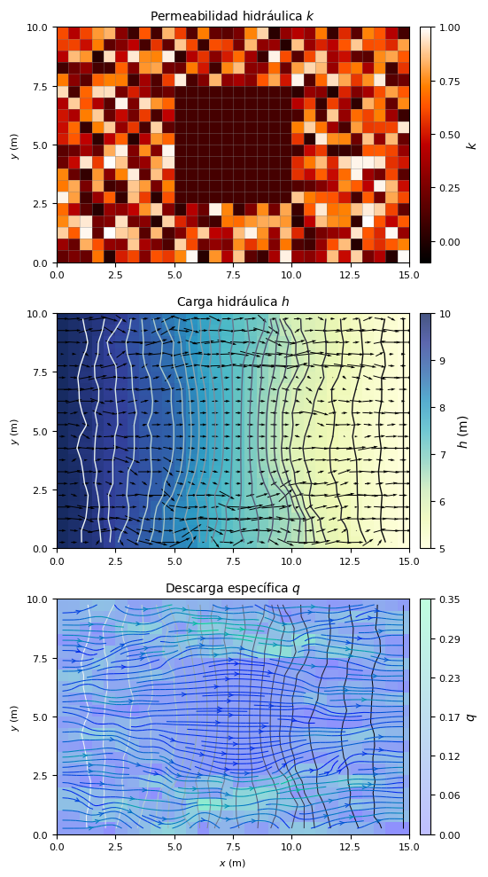

import numpy as np
import matplotlib.pyplot as plt
import flopy
import os
import xmf65 sim_ws = sandbox4
init = {
'sim_name' : "flow",
'exe_name' : "C:\\Users\\luiggi\\Documents\\GitSites\\xmf6\\mf6\\windows\\mf6",
'sim_ws' : "sandbox4"
}
time = {
'units': "DAYS",
'nper' : 1,
'perioddata': [(1.0, 1, 1.0)]
}
ims = {}
gwf = {
'modelname': init["sim_name"],
'model_nam_file': f"{init["sim_name"]}.nam",
'save_flows': True
}
dis = {
'nlay': 1,
'nrow': 20,
'ncol': 30,
'delr': 0.5,
'delc': 0.5,
'top' : 0.0,
'botm': -1.0
}
ic = {
'strt': 10
}
chd_data = []
for row in range(dis['nrow']):
chd_data.append([(0, row, 0), 10.0]) # Condición en la pared izquierda
chd_data.append([(0, row, dis['ncol'] - 1), 5.0]) # Condición en la pared derecha
chd = {
'stress_period_data': chd_data,
}
k_data = np.random.rand(dis['nlay'], dis['nrow'], dis['ncol'])*1.0
k_data[:,5:15,10:20] = 0.1
npf = {
'save_specific_discharge': True,
'k': k_data,
}
oc = {
'budget_filerecord': f"{init['sim_name']}.bud",
'head_filerecord': f"{init['sim_name']}.hds",
'saverecord': [("HEAD", "ALL"), ("BUDGET", "ALL")],
'printrecord': [("HEAD", "ALL")]
}- Función
xmf6.gwf.initialize().- SIM
- TDIS
- IMS
- Función
xmf6.gwf.build().- GWF
- DIS
- IC
- CHD
- NPF
- WEL
- OC
- GWF
o_sim = xmf6.gwf.initialize(init = init, time = time, ims = ims)
sim configuration::
sim_name = flow
exe_name = C:\Users\luiggi\Documents\GitSites\xmf6\mf6\windows\mf6
time configuration::
units = DAYS
nper = 1
perioddata = [(1.0, 1, 1.0)]
---
numerical solution configuration::
---
o_gwf = xmf6.gwf.build(o_sim,
gwf = gwf, dis = dis, ic = ic, chd = chd, npf = npf, oc = oc)
numerical model configuration::
modelname = flow
model_nam_file = flow.nam
save_flows = True
---
spatial discretization configuration::
nlay = 1
nrow = 20
ncol = 30
delr = 0.5
delc = 0.5
top = 0.0
botm = -1.0
---
initial conditions configuration::
strt = 10
---
boundary conditions configuration::
stress_period_data = [[(0, 0, 0), 10.0], [(0, 0, 29), 5.0], [(0, 1, 0), 10.0], [(0, 1, 29), 5.0], [(0, 2, 0), 10.0], [(0, 2, 29), 5.0], [(0, 3, 0), 10.0], [(0, 3, 29), 5.0], [(0, 4, 0), 10.0], [(0, 4, 29), 5.0], [(0, 5, 0), 10.0], [(0, 5, 29), 5.0], [(0, 6, 0), 10.0], [(0, 6, 29), 5.0], [(0, 7, 0), 10.0], [(0, 7, 29), 5.0], [(0, 8, 0), 10.0], [(0, 8, 29), 5.0], [(0, 9, 0), 10.0], [(0, 9, 29), 5.0], [(0, 10, 0), 10.0], [(0, 10, 29), 5.0], [(0, 11, 0), 10.0], [(0, 11, 29), 5.0], [(0, 12, 0), 10.0], [(0, 12, 29), 5.0], [(0, 13, 0), 10.0], [(0, 13, 29), 5.0], [(0, 14, 0), 10.0], [(0, 14, 29), 5.0], [(0, 15, 0), 10.0], [(0, 15, 29), 5.0], [(0, 16, 0), 10.0], [(0, 16, 29), 5.0], [(0, 17, 0), 10.0], [(0, 17, 29), 5.0], [(0, 18, 0), 10.0], [(0, 18, 29), 5.0], [(0, 19, 0), 10.0], [(0, 19, 29), 5.0]]
---
flow properties configuration::
save_specific_discharge = True
k = [[[0.60954214 0.4165278 0.59880469 0.77742402 0.83425926 0.29178523
0.07997176 0.63055316 0.10080799 0.84034342 0.58251966 0.14685616
0.71997601 0.19212944 0.16469966 0.24887592 0.73077801 0.90353812
0.02421148 0.3209033 0.42660233 0.33009569 0.71149392 0.06640044
0.53761123 0.15403321 0.73331497 0.6325598 0.4233338 0.10060297]
[0.58172865 0.59489213 0.47720888 0.7186139 0.17088769 0.27663864
0.4431125 0.10531354 0.56255331 0.18103481 0.87588637 0.60414895
0.07070339 0.61333832 0.58070383 0.24453826 0.84468363 0.31074807
0.3366561 0.01063396 0.86642706 0.33885709 0.52127048 0.43854741
0.63139824 0.88296731 0.61651247 0.62249954 0.53600603 0.79623583]
[0.42651659 0.85189251 0.76862176 0.0192641 0.92486633 0.45859273
0.95222947 0.74718305 0.7303584 0.96669004 0.03797059 0.41581452
0.55995294 0.29258672 0.50915158 0.67583881 0.36547336 0.06630294
0.97127454 0.60900597 0.15396387 0.60133809 0.8868297 0.36459134
0.47613916 0.1834512 0.15922238 0.74681327 0.80542287 0.63698214]
[0.08493063 0.21007637 0.31864139 0.10171217 0.10084855 0.65461473
0.27637435 0.76873855 0.80473152 0.23698279 0.21767036 0.7080493
0.49738631 0.09256222 0.74180426 0.85496122 0.29785593 0.30898477
0.68138992 0.21398019 0.78980619 0.91025677 0.84595157 0.33737856
0.62253958 0.71005846 0.38156734 0.73047296 0.08941825 0.5618577 ]
[0.71061168 0.29468957 0.16549578 0.66360553 0.72325996 0.71499216
0.08569351 0.37260317 0.131688 0.5795041 0.95926536 0.11343725
0.27230613 0.83758215 0.30964065 0.37883134 0.29639367 0.63075808
0.81085514 0.49520185 0.97593826 0.14202662 0.67044399 0.92963538
0.80701181 0.56924532 0.75538746 0.96009188 0.15138022 0.21820589]
[0.92162446 0.11777162 0.66816536 0.91985051 0.93065289 0.24674941
0.51027642 0.35290523 0.15075646 0.21425436 0.1 0.1
0.1 0.1 0.1 0.1 0.1 0.1
0.1 0.1 0.03633807 0.32857986 0.29322688 0.00196099
0.52364293 0.26822774 0.37733374 0.61720164 0.79750417 0.63872012]
[0.40899421 0.89045582 0.63089737 0.40582278 0.1574124 0.97798622
0.25798593 0.92841246 0.77109303 0.66305755 0.1 0.1
0.1 0.1 0.1 0.1 0.1 0.1
0.1 0.1 0.4260733 0.5711068 0.06047622 0.58723017
0.37066854 0.03590139 0.83174182 0.68410482 0.19430228 0.74566653]
[0.48909608 0.40143397 0.71766863 0.88823988 0.19841955 0.46523447
0.23884811 0.57743066 0.11683424 0.44784673 0.1 0.1
0.1 0.1 0.1 0.1 0.1 0.1
0.1 0.1 0.11639044 0.74145373 0.14097811 0.88323276
0.32756397 0.6785058 0.59312826 0.72339001 0.35930303 0.07056934]
[0.47188999 0.67402566 0.0598525 0.72428385 0.88550466 0.3263359
0.56709129 0.11379937 0.8986357 0.17379803 0.1 0.1
0.1 0.1 0.1 0.1 0.1 0.1
0.1 0.1 0.72221205 0.89874218 0.69565134 0.36238807
0.11179486 0.78635862 0.57046664 0.58615268 0.59553973 0.94976285]
[0.50503726 0.6355614 0.44647873 0.03569859 0.44456797 0.65613192
0.01214675 0.41611311 0.76761505 0.66311039 0.1 0.1
0.1 0.1 0.1 0.1 0.1 0.1
0.1 0.1 0.56194922 0.03204619 0.95461408 0.75246119
0.73386853 0.21528988 0.87108699 0.31797345 0.84903037 0.19728488]
[0.16191081 0.20698614 0.36144665 0.18948286 0.81532856 0.96762703
0.26893315 0.75286238 0.27806896 0.98215767 0.1 0.1
0.1 0.1 0.1 0.1 0.1 0.1
0.1 0.1 0.09628858 0.46389259 0.57139433 0.05555563
0.06641261 0.10354844 0.63821466 0.64589331 0.5987501 0.33380669]
[0.21081234 0.46304405 0.94228682 0.57480994 0.99385803 0.87440511
0.24412777 0.3378692 0.80118833 0.94706171 0.1 0.1
0.1 0.1 0.1 0.1 0.1 0.1
0.1 0.1 0.54011187 0.70446813 0.85334526 0.53270045
0.91712264 0.97645601 0.9776483 0.94335103 0.55395428 0.49716771]
[0.7351477 0.1976568 0.04880156 0.77312046 0.30244749 0.7289515
0.96047552 0.17623309 0.86618092 0.51502403 0.1 0.1
0.1 0.1 0.1 0.1 0.1 0.1
0.1 0.1 0.55417786 0.46583961 0.65164091 0.46724248
0.67813855 0.97581013 0.35308116 0.23586903 0.60014789 0.15751739]
[0.71182831 0.81341408 0.24928742 0.81940459 0.09119011 0.14351805
0.87831421 0.78086573 0.24781307 0.72275756 0.1 0.1
0.1 0.1 0.1 0.1 0.1 0.1
0.1 0.1 0.14295445 0.17638646 0.27632532 0.40086105
0.75169229 0.64590893 0.44500937 0.97433426 0.85282528 0.47198021]
[0.97070155 0.79323625 0.0926608 0.33863488 0.65114285 0.05857631
0.86041702 0.58136518 0.02877632 0.62039913 0.1 0.1
0.1 0.1 0.1 0.1 0.1 0.1
0.1 0.1 0.8772467 0.71246371 0.64517283 0.6291897
0.5008465 0.10873085 0.64639637 0.23427497 0.80667509 0.60830658]
[0.67902921 0.41613792 0.15886561 0.01517551 0.32729675 0.31170932
0.45055506 0.7638732 0.90504783 0.27400773 0.04283054 0.42026607
0.20658033 0.97060952 0.73686589 0.07027035 0.27332108 0.75062355
0.23843715 0.81012994 0.07389765 0.64320421 0.95219903 0.69276063
0.72732776 0.86836107 0.96046007 0.90047045 0.5935871 0.18096066]
[0.74038223 0.88442429 0.94867736 0.23565713 0.27983582 0.92766227
0.23025879 0.29135481 0.00782693 0.89991441 0.52855816 0.3398044
0.12428893 0.09020395 0.7062567 0.6790088 0.76948659 0.81606104
0.82018279 0.77556398 0.0196206 0.44562157 0.85888991 0.75357674
0.73229664 0.04684407 0.99578841 0.62992741 0.44665919 0.64277267]
[0.89412357 0.64700497 0.98000352 0.1885739 0.99814334 0.89585734
0.85589407 0.15125979 0.84876382 0.12537594 0.2655866 0.62314632
0.88980534 0.4433292 0.41013799 0.85601778 0.97011184 0.76082126
0.35077519 0.86173279 0.53425341 0.09267336 0.24040696 0.32353725
0.3740524 0.94398973 0.63865311 0.53522329 0.98313504 0.33025271]
[0.3454997 0.19925824 0.82498561 0.61767584 0.3233694 0.30111378
0.88094893 0.37886199 0.25491263 0.12571527 0.89747098 0.60414257
0.21775654 0.32055469 0.25358899 0.75421632 0.56402424 0.70097943
0.26981733 0.70447768 0.12850656 0.08597061 0.32757756 0.61899271
0.85444533 0.00866161 0.62179413 0.54558051 0.64146646 0.72862054]
[0.18398859 0.25501667 0.19902577 0.69882713 0.00929394 0.51422457
0.59863361 0.27425144 0.62329835 0.57342179 0.7367898 0.9850804
0.01306854 0.76514079 0.41054708 0.87316507 0.170627 0.07714944
0.3820619 0.96639174 0.33743642 0.29670213 0.40844918 0.86048357
0.46868387 0.90048778 0.24200684 0.40585159 0.01574999 0.98852646]]]
---
output configuration::
budget_filerecord = flow.bud
head_filerecord = flow.hds
saverecord = [('HEAD', 'ALL'), ('BUDGET', 'ALL')]
printrecord = [('HEAD', 'ALL')]
---
o_sim.write_simulation(silent = True)o_sim.run_simulation(silent=False)FloPy is using the following executable to run the model: ..\..\..\..\mf6\windows\mf6.exe
MODFLOW 6
U.S. GEOLOGICAL SURVEY MODULAR HYDROLOGIC MODEL
VERSION 6.6.1 02/10/2025
MODFLOW 6 compiled Feb 10 2025 17:37:25 with Intel(R) Fortran Intel(R) 64
Compiler Classic for applications running on Intel(R) 64, Version 2021.7.0
Build 20220726_000000
This software has been approved for release by the U.S. Geological
Survey (USGS). Although the software has been subjected to rigorous
review, the USGS reserves the right to update the software as needed
pursuant to further analysis and review. No warranty, expressed or
implied, is made by the USGS or the U.S. Government as to the
functionality of the software and related material nor shall the
fact of release constitute any such warranty. Furthermore, the
software is released on condition that neither the USGS nor the U.S.
Government shall be held liable for any damages resulting from its
authorized or unauthorized use. Also refer to the USGS Water
Resources Software User Rights Notice for complete use, copyright,
and distribution information.
MODFLOW runs in SEQUENTIAL mode
Run start date and time (yyyy/mm/dd hh:mm:ss): 2025/05/18 16:35:52
Writing simulation list file: mfsim.lst
Using Simulation name file: mfsim.nam
Solving: Stress period: 1 Time step: 1
Run end date and time (yyyy/mm/dd hh:mm:ss): 2025/05/18 16:35:52
Elapsed run time: 0.118 Seconds
Normal termination of simulation.(True, [])# --- Recuperamos los resultados de la simulación ---
head = xmf6.gwf.get_head(o_sim, o_gwf)
qx, qy, qz, n_q = xmf6.gwf.get_specific_discharge(o_sim, o_gwf)# --- Parámetros para las gráficas ---
grid = o_gwf.modelgrid
x, y, z = grid.xyzcellcenters
xticks = np.linspace(grid.extent[0], grid.extent[1], 7)
yticks = np.linspace(grid.extent[2], grid.extent[3], 5)
xlabels = [f'{x:1.1f}' for x in xticks]
ylabels = [f'{y:1.1f}' for y in yticks]
kvmin = 1.0 #np.nanmin(k_data)
kvmax = 0.0 #np.nanmax(k_data)
hvmin = np.nanmin(head)
hvmax = np.nanmax(head)
qvmin = 0.00 #np.nanmin(n_q)
qvmax = 0.35 #np.nanmax(n_q)
# --- Definición de la figura ---
fig, (ax1, ax2, ax3) = plt.subplots(3, 1, figsize =(10,10))
# --- Gráfica 1. ---
kview = flopy.plot.PlotMapView(model = o_gwf, ax = ax1)
kview.plot_grid(linewidths = 0.5, alpha = 0.5)
k_ac = kview.plot_array(k_data, cmap = "gist_heat", vmin = kvmin, vmax = kvmax)
k_cb = plt.colorbar(k_ac, ax = ax1, label = "$k$",
ticks = [0.0, 0.25, 0.50, 0.75, 1.0],
cax = xmf6.vis.cax(ax1, k_ac))
k_cb.ax.tick_params(labelsize=8)
ax1.set_title("Permeabilidad hidráulica $k$", fontsize=10)
ax1.set_ylabel("$y$ (m)", fontsize = 8)
ax1.set_xticks(ticks = xticks, labels = xlabels, fontsize = 8)
ax1.set_yticks(ticks = yticks, labels = ylabels, fontsize = 8)
ax1.set_aspect('equal')
# --- Gráfica 2. ---
hview = flopy.plot.PlotMapView(model = o_gwf, ax = ax2)
h_ac = hview.plot_array(head, cmap = "YlGnBu", vmin = hvmin, vmax = hvmax, alpha = 0.75)
hview.contour_array(head, levels = 30, cmap = "bone", linewidths = 1.0)
ax2.quiver(x, y, qx[0], qy[0], scale = 3,
color = 'k', linewidth = 0.95, pivot = 'middle')
h_cb = plt.colorbar(h_ac, ax = ax2, label = "$h$ (m)",
cax = xmf6.vis.cax(ax2, h_ac))
h_cb.ax.tick_params(labelsize=8)
ax2.set_title("Carga hidráulica $h$", fontsize=10)
ax2.set_ylabel("$y$ (m)", fontsize = 8)
ax2.set_xticks(ticks = xticks, labels = xlabels, fontsize = 8)
ax2.set_yticks(ticks = yticks, labels = ylabels, fontsize = 8)
ax2.set_aspect('equal')
# --- Gráfica 3. ---
fview = flopy.plot.PlotMapView(model = o_gwf, ax = ax3)
q_ac = fview.plot_array(n_q, cmap = "winter", vmin = qvmin, vmax = qvmax, alpha = 0.25)
fview.contour_array(head, levels = 20, cmap = 'bone', linewidths = 0.75, )
ax3.streamplot(x, y[::-1][:], qx[0], qy[0][::-1],
density = [2, 1.5], linewidth = 0.75, broken_streamlines = True,
color = n_q, cmap = "winter",
arrowstyle = "->", arrowsize = 0.75, )
q_cb = plt.colorbar(q_ac, ax=ax3, label="$q$",
ticks = np.linspace(0.0, 0.35, 7),
format = "{x:3.2f}",
cax = xmf6.vis.cax(ax3, q_ac))
q_cb.ax.tick_params(labelsize=8)
ax3.set_title("Descarga específica $q$", fontsize=10)
ax3.set_xlabel("$x$ (m)", fontsize = 8)
ax3.set_ylabel("$y$ (m)", fontsize = 8)
ax3.set_xticks(ticks = xticks, labels = xlabels, fontsize = 8)
ax3.set_yticks(ticks = yticks, labels = ylabels, fontsize = 8)
ax3.set_aspect('equal')
plt.tight_layout()
plt.savefig("04_MF6.pdf")
plt.show()